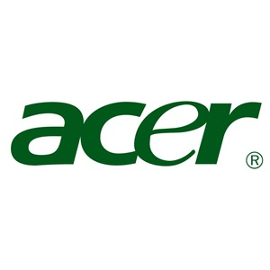

ACER

Acer Inc. (commonly known as Ace) is a Taiwanese multinational hardware and electronics corporation specializing in advanced electronics technology and is headquartered in Xizhi, New Taipei City, Taiwan. Acer's products include desktop PCs, laptop PCs (Which can be further subdivided into clamshell, 2-in-1, convertible and Chromebook), tablets, servers, storage devices, Virtual Reality devices, displays, smartphones and peripherals.
Acer is even older than Compaq: the company was established 35 years ago and is well-known for offering a variation of cheap but good quality laptop models. The Aspire One laptops are very popular with customers as a result of that value. The design of these devices, on the other hand, is disappointing. Moreover, the company faces everyday competition from Dell and ASUS.